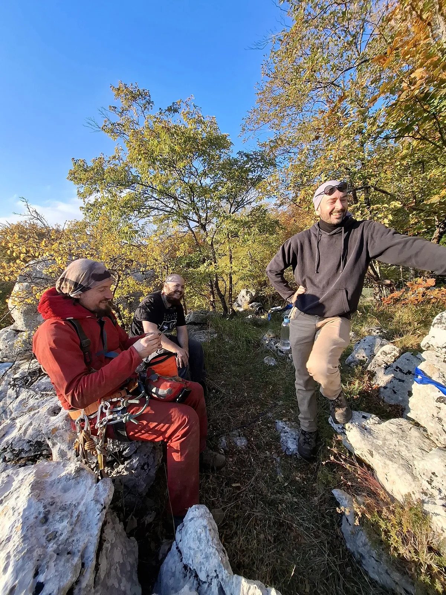

Mamet Inspirirajući
Skupila se tako entuzijastična i brojčano impresivna ekipa od osamnaest odvažnih djevojaka i mladića spremnih da osvoji dno Mameta. Putem su brojčano otpadali na ponosnih osam.

Napisao: Nino Pintarić
Fotografije: Mia Šepčević, Ivona Klišanin, Vedran Ferenčak
25. listopada 2025. posjetili smo Mamet, dvjestotinjak metara duboku jamu, najviše poznatu po velebnom ulazu širokom sedamdesetak metara, previsu od 120 metara koji izaziva strahopoštovanje te ništa manje impresivnom skoku s padobranom iz 2004., nedavno i tragično preminulog Felixa Baumgartnera, ekstremnog sportaša koji je svojevremeno skakao i iz svemira.
Sve je počelo s idejom Mislava Sajka, našeg marljivog oružara, koji je najavio i organizirao izlet. Skupila se entuzijastična i brojčano impresivna ekipa od osamnaest odvažnih djevojaka i mladića spremnih da osvoji dno te je dogovoreno okupljanje u 7 sati u kafiću Cug kod Glavnog kolodvora. No, kako često to i bude, zbog raznih obaveza (zli jezici rekli bi prepali od previsa), jedan po jedan, u parovima te u manjim grupama, članovi nekoć brojčano impresivne ekipe su odustajali. Posljednji udarac organizaciji izleta zadala je studentska zabava, zbog koje su neki odvažni članovi ekipe došli s malo ili ništa sna prethodne noći (što će nadoknaditi putem), a neki su javili ujutro da nisu u stanju doći. Svima nam je bilo žao što Teo nije došao budući da su njegove kulinarske sposobnosti vrlo dobro poznate svim aktivnim speleolozima Velebita. Ovaj egzodus, nekoć brojčano impresivnu ekipu, sveo je na osam entuzijastičnih članova (Mislav Sajko, Ivona Klišanin, Mia Šepčević, Vedran Ferenčak, Olga Jerković, Venio Fabijančić, Dora Troha i Nino Pintarić - ja) koji kreću iz Zagreba, što je kao pozitivnu posljedicu imalo što smo svi stali u vjerni Velebitov speleokombi. Na put smo krenuli debelo više od sat vremena nakon planiranog okupljanja, a Teo se konačno uspio javiti nakon što smo prešli naplatne kućice. Ekipi se kod zadnje točke do koje je kombi mogao doći pridružio i Ličko, koji se jedini od ekipe već spustio u Mamet. Ovom prigodom odlučio je ne se spuštati, ali njegova moralna podrška, održavanje vatre te pomoć oko transporta ljudi i opreme svakako su se cijenili. Nakon ručka krenuli smo na dug i nekima mukotrpan put po tobožnjoj planinarskoj stazi, gdje smo dobili još malu, ali vrijednu pomoć mladog radišnog para iz Crne Gore, koji je nekoliko stvari odlučio ponijeti do jame te nam tako olakšati uspon.
Kod ulaza u jamu, posljednje pripreme. Gradnja skloništa, dogovori oko redoslijeda ulaska, oblačenje opreme. Jamu je postavio Venio, uz Dorinu pomoć. Od ulaza vodi jedna linija, 80 metara više-manje uz stijenu, s jednom policom, do previsa, gdje su postavljene dvije paralelne linije do dna, desna s užetom od 200m koje ide direktno do dna i lijeva linija na kojoj su užeta spojena uzlom. Nakon postavljača, ulaze Olga, Fero, Mićo pa Ivona... Drama. Mićo se spušta do previsa, kaže da ga boli glava i izlazi, Ivona mora izaći kako bi ga propustila. Ivona se vraća, hrabro spušta i u jednom trenutku nešto viče. Na površini je bilo interpretirano kao da izlazi van te čekam da ona izađe kako bih ja mogao ući, dok gledam sa sigurne udaljenosti ogroman ulaz u jamu, slušam Ličkove priče kako se on tek iz trećeg pokušaja spustio u Mamet i pitam se što mi je ovo trebalo. Budući da Ivona dugo nije izlazila, odlučili smo je pitati da ponovi što je bila rekla, na što ona odgovara da mogu ići dolje, na naše opće oduševljenje što smo na površini pogrešno interpretirali njenu poruku. Atmosfera se na površini uglavnom mijenja na bolje, lagano se kreće mračiti, dno jame se ne vidi osim pokoje upaljene lampe. Idući se spuštam ja pa Mia.
Na polici me dočekao Venio, koji je već krenuo prema van, zatim je stigla i Olga. Ja krećem na previs, koji se u mraku nije činio naročito strašan, te se spuštam dolje po jednoj liniji dok Dora izlazi po drugoj. Za sve znatiželjne, moj descender definitivno se nije pregrijao. Na dnu slijedi okrijepa i odmor. Koji su u jamu stigli po danu, imali su svakako što vidjeti, budući da kroz ogroman ulaz danje svijetlo dopire do dna. Mi ostali, mogli smo razlgedati koristeći naglavnu rasvjetu. Prilikom penjanja po previsu, svatko ima svoju strategiju po pitanju svjetla. Neki preferiraju mrak pa dok se ne zapucaju u uzao, nekima je draže vidjeti gdje idu. Na zidovima igraju sjene onih koji su odlučili koristiti rasvjetu, što je nama dolje, uz duboke jamske razgovore, svakako skratilo vrijeme. Gledamo zvjezdano nebo i pokoji avion, Ivona isprobava dugu ekspoziciju, a u dijelu mene se čak javila i vrlo slaba, nedovoljna želja da napišem pjesmu o tome jel to zvijezda il' je to Dora koja izlazi iz jame.
Izašli su svi, Mia i ja smo se adekvatno odmorili, došao je red i na nas da krenemo prema izlazu. Mia kreće prva po lijevoj liniji, ja obavljam završne pripreme i krećem par minuta nakon nje. Kao ovogodišnji školarac, najduža vertikala na kojoj sam do sada bio, bila je 70 metara do ledenog čepa Lukine jame. Nisam znao što mogu očekivati od sebe, no jedina opcija je ukopčati spravice za penjanje te izaći van po užetu. Jo-jo efekt 120 metara užeta na previsu nije veselio ni Miu ni mene. Penjemo se cijelu vječnost, na što ju pitam je li stigla do kraja previsa. Naravno da nije. Penjemo se drugu vječnost, na što ju pitam je li stigla do uzla na svojoj liniji. Kaže ni blizu. Ja namještavam stremen 3 puta, isprobavam penjanje s jednom nogom u stremenu, s dvije noge u stremenu, i ne žuri mi se generalno, jer visine se ne bojim kad sam ukopčan. Vježbam tehniku, koju mislim da sam silom prilike dosta poboljšao, no kako sam poboljšavao tehniku, istovremeno sam postajao i sve umorniji od penjanja pa posao nije postajao lakši sve dok se nisam približio kraju previsa dovoljno da se jo-jo efek smanji na prihvatljivu vrijednost. U to vrijeme, Mia je već bila blizu izlaza, no mene je još čekao dugi, ali ipak lakši dio puta. Namještam stremen još 3 puta, penjem s nogom na stijeni, penjem sa dvije u stremenu, bližim se izlazu. Već sam blizu i čujem bodrenje s površine. Na pitanje koliko je sati, dobijam odgovor pola dvanaest. Ushićen što ću izaći prije ponoći, ubrzavam penjanje, kad evo grč u lijevom bicepsu, ni minutu od kad sam pitao za sat. I ništa, ponovno se fokusiram na tehniku, usporavam, biceps koristim što je manje moguće, panika nije opcija. Polako, ali sigurno, izlazim van, gdje me čekaju ovacije. Nakon što sam podijelio s ekipom posljednju dramu koja me zadesila, grč u bicepsu, dobio sam komentare da se zato penje nogama, a ne rukama. To bi, naravno, tvrdim, bilo glupo, s obzirom na to da sutradan moram s planine, na koju sam jedva došao, sići nogama, a ne rukama.
Nakon gozbe, pjesme i kapljice, odspavali smo neki duže, a neki kraće, i probudili se većina oko 10h. Neki su jutro iskoristili i za razgledavanje obližnjih prirodnih ljepota, neki su uglavnom odmarali, a jamu su raspremali Ivona, Mia, koja je htjela vidjeti jamu po danu, i Mićo, koji se odlučio iskupiti samom sebi za prethodni dan. Iznijeli su svaki jednu transportku opreme te uspješno obavili zadatak.
Nakon toga, krenulo je raspremanje logora te nošenje opreme do kombija, prilikom čega mi je bilo drago što nisam prilikom penjanja po užetu, noge koristio više. Nakon podužeg spuštanja, zaputili smo se na piće, naručili pizzu te pozdravili s Ličkom i umorni se zaputili prema Zagrebu.
Osobno, izlet mi je bio zanimljiv, zabavan, izazovan, poučan, ali i inspirirajući. Natjerao me da ispitam, ali i proširim neke svoje granice. A što se tiče najavljenog ponovnog posjeta jami na proljeće? Obećajem da ću razmisliti.
(Op. adm.)
Popisu rekorda u jami Mamet, dodajmo i prisjećanje na spuštanje balonom. Sedamdesetogodišnji Austrijanac s hrvatskom putovnicom, Ivan Trifonov, prvi je čovjek na svijetu koji je pokušao i uspio ostvariti let balonom u podzemlje. Fotografija toga krasila je prostorije Velebita u Radićevoj.
HTZ je o tome snimila i promotivni filmić:
https://www.youtube.com/embed/b0RtZL06EbI?si=6bFtY7FTA0KHYFm9